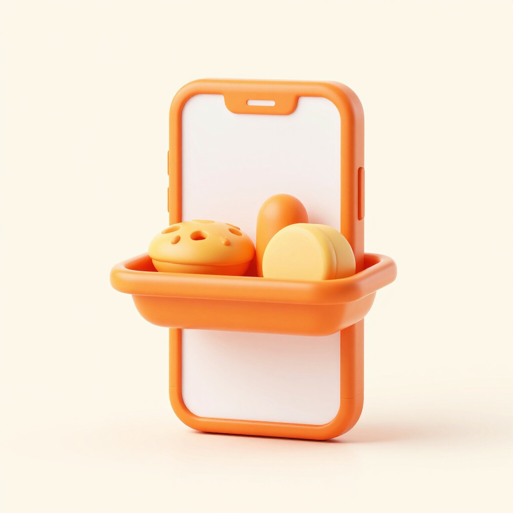

Long Wait Times
Students waste precious break time standing in long queues during peak hours, leading to significant time loss and reduced productivity.
The Food Stall Pre-Order App is a mobile and web-based ordering system designed for school canteens, campus food stalls, and small food vendors. It lets customers browse the menu, pre-order, schedule a pickup time, and pay by cash or e-wallet — eliminating long queues during peak hours. Vendors receive real-time order notifications and manage menu, stock, and sales through a simple dashboard.
Students waste precious break time standing in long queues during peak hours, leading to significant time loss and reduced productivity.
Walk-away customers and missed orders due to the chaos of manual handling at the counter result in significant revenue loss for vendors.
Manual order entry and inventory management are prone to human error, causing mistakes, stockouts, and overall operational inefficiency.
A four-step journey to skip the line and save your time.
Explore the full selection of campus food stalls and canteens from your phone.
Select your favorite items and customize your meal with ease using the app interface.
Schedule your pickup time to avoid the peak rush and ensure your food is ready when you are.
Enjoy your meal at your own pace, no more waiting in the long canteen lines.
Streamline your campus food experience with our smart pre-ordering and vendor management system.

Choose your favorite meals and schedule a pickup time. No more waiting in the long lines during peak hours.
Real-time order notifications, stock management, and menu control all in one intuitive interface for your stall.
Pay by cash on pickup or e-wallet. Multiple payment options to ensure a seamless and secure transaction for every customer.
Track daily and weekly sales performance with detailed reports. Perfect for vendors to manage inventory and boost profits.
A complete breakdown of the modules that make up the Food Stall Pre-Order App.
| Module/Feature | Description |
|---|---|
| 1. Customer & Vendor Registration | Registers customer and vendor accounts with their name, contact information, and stall details while applying appropriate privacy controls. |
| 2. Stall & Profile Management | Allows vendors to set up and manage their stall profile, including operating hours, stall name, and contact information. |
| 3. Menu Management | Lets vendors create, update, and organize their food menu with item names, prices, photos, and availability status. |
| 4. Item Catalog & Search | Provides customers with a browsable catalog of food items across stalls, with search and category filters for quick discovery. |
| 5. Shopping Cart | Allows customers to add items from various stalls to a cart and review selections before placing a pre-order. |
| 6. Pre-Order Placement | Lets customers submit a pre-order for selected items without waiting in line, ready for confirmation by the vendor. |
| 7. Pickup Scheduling | Enables customers to choose a preferred pickup time so their food is ready when they arrive, avoiding peak-rush queues. |
| 8. Payment Options | Supports cash on pickup and e-wallet payments, providing flexible and seamless checkout for every customer. |
| 9. Order Notifications | Sends real-time notifications to vendors when new orders arrive and to customers when their order is ready for pickup. |
| 10. Order Status Tracking | Displays the live status of each order from Pending → Preparing → Ready for Pickup so customers always know where their food is. |
| 11. Vendor Dashboard | Shows vendors their incoming orders, menu status, stock levels, and daily sales all in one intuitive interface. |
| 12. Inventory & Stock Management | Enables vendors to track ingredient and item stock levels, preventing stockouts and reducing manual inventory errors. |
| 13. Sales Reports & Analytics | Generates daily and weekly sales summaries so vendors can monitor performance and make data-driven decisions. |
| 14. Multi-Stall Support | Provides a scalable system that serves multiple campus food stalls and vendors on a single platform. |
| 15. User & Access Management | Provides different access levels for customers and authorized vendor personnel to protect sensitive order and account data. |
| 16. Order History | Maintains a personal record of past orders for customers, allowing them to track prior purchases and quickly reorder favorites. |
| 17. Feedback & Rating | Lets customers rate their purchased items and leave feedback so vendors can continuously improve their food and service. |
Our goals are focused on streamlining campus food services through technology, ensuring a seamless experience for both students and vendors.
A transparent outline of the technical and functional boundaries of the current project phase.
A comprehensive breakdown of the total project cost, ensuring all development and operational requirements are met within the allocated budget.
| Item | Description | Cost (₱) |
|---|---|---|
| App Development Tools | IDE & Licenses | ₱0.00 |
| Cloud Hosting & Database | 3 Months | ₱2,000.00 |
| UI/UX Design Assets | Figma & Canva | ₱500.00 |
| Domain & SSL Certificate | Annual Certificate | ₱1,500.00 |
| Testing Devices | 5 Mobile Devices | ₱1,000.00 |
| Marketing & Promotion | QR Code Flyers | ₱500.00 |
| Contingency Fund | Unforeseen Costs | ₱1,000.00 |
| Total | ₱6,500.00 |
A 10-week execution plan from planning through launch, September to November 2026.
| Task | Description | Duration | Deadline |
|---|---|---|---|
| T1 | Requirements Gathering & Research | Week 1 | Sept 7, 2026 |
| T2 | UI/UX Wireframing & DB Design | Weeks 2–3 | Sept 21, 2026 |
| T3 | Core App & Dashboard Development | Weeks 4–7 | Oct 19, 2026 |
| T4 | Bug Fixing & QA / UAT Testing | Week 8 | Oct 26, 2026 |
| T5 | Deployment & Vendor Onboarding | Week 9 | Nov 2, 2026 |
| T6 | Post-Launch Feedback & Adjustments | Week 10 | Nov 9, 2026 |
Experience a seamless ordering process designed to eliminate long queues. Browse menus, schedule your pickup, and pay with ease, all from the comfort of your phone.
Gain real-time visibility into your orders and manage your inventory with precision. Our dashboard provides sales reports and a streamlined workflow to maximize your daily revenue.
Key numbers behind the Food Stall Pre-Order App.